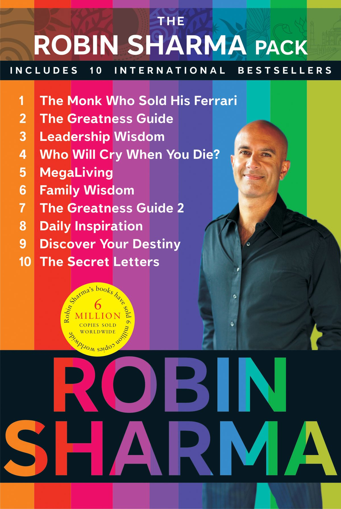
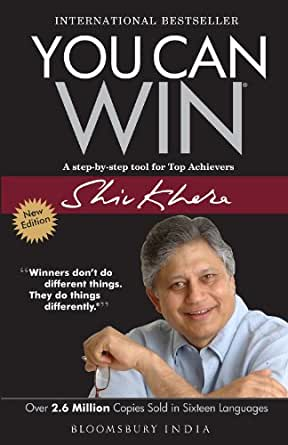
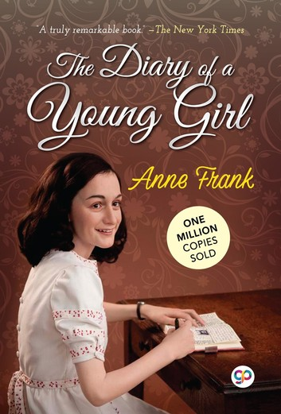
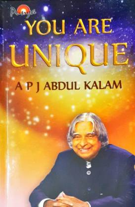
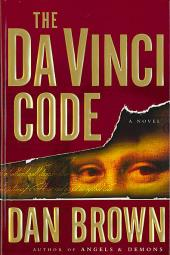
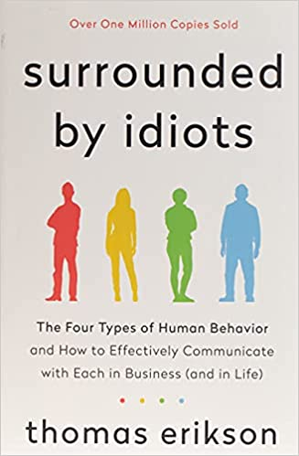
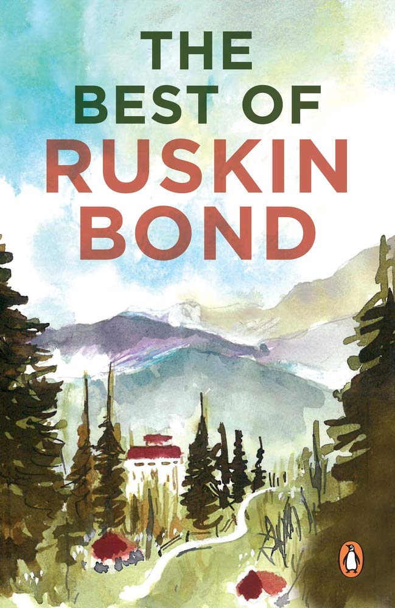

RS Pack
8overview
It is about a fictional character named Julian Mantle. Julian is a successful lawyer but is struggling with stress and work pressure. He finally decides to leave his previous baggage and luxurious life behind and travel to the Himalayan Mountains. Julian travels there in search of peace. After arriving, he encounters Yogi Raman. Yogi Raman offers Julian seven virtues for him to obtain enlightenment. After a few months, Julian returns and narrates all the teachings of Yogi Raman.

YC Win
6overview
You Can Win motivates people and take things right from your daily life and turns them into positive thrust. This book is for those who pursue balanced personality and who want to move towards success with positivity. This is easy to read a self-help book.

AF Diary
5overview
“Anne Frank: The Diary of a Young Girl” is the personal diary of a thirteen-year-old Jewish girl, Anne pours her heart into it. Anne was enjoying her life just like any other teenager would, just before the German occupation of the Netherlands during the Second World War.

YA Unique
8overview
You Are Unique, with their heartfelt sincerity, chiselled logic and experienced intuition are amazing lamps on the path of life, giving strength to seek one's Unique Self. This book draws an unforgettable blue print of success for all.

DV Code
8overview
The Da Vinci Code follows "symbologist" Robert Langdon and cryptologist Sophie Neveu after a murder in the Louvre Museum in Paris causes them to become involved in a battle between the Priory of Sion and Opus Dei over the possibility of Jesus Christ and Mary Magdalene having had a child together.
Cry Or Die
8overview
Wisdom-rich manual, the author offers 101 simple solutions to life's most complex problems, ranging from a little-known method for beating stress and worry to a powerful way to enjoy the journey while you create a legacy that lasts. “When You Were Born, You Cried While The World Rejoiced.
Alchemist
8overview
The Alchemist tells the story of a young shepherd named Santiago who is able to find a treasure beyond his wildest dreams. Along the way, he learns to listen to his heart and, more importantly, realizes that his dreams, or his Personal Legend, are not just his but part of the Soul of the Universe.

SB Idiots
8overview
Surrounded by Idiots by Thomas Erikson provides a method for assessing behaviors of people we communicate with. This method can help to increase our understanding of how people communicate and to better communicate and collaborate with people. It will also give you a better self awareness
